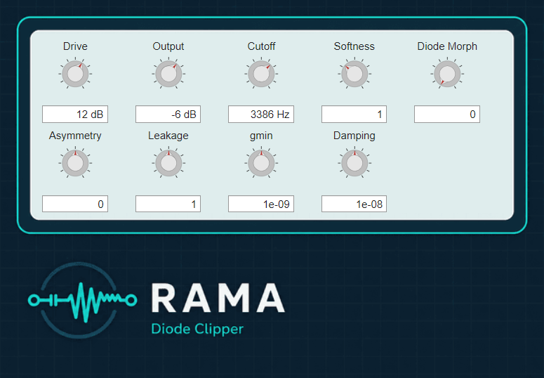

RESIDUAL · ADAPTIVE · MULTI-RATE · CIRCUIT EMULATION
Residual-Driven
Adaptive
Multi-Rate
Circuit Emulation
A research project on nonlinear analog circuit emulation for virtual analog audio — bridging DAE-based modeling, local linear surrogate solving, and residual-driven adaptive time stepping.
About the Project
A residual-driven adaptive solver for nonlinear analog audio circuit emulation.
RAMA explores a residual-driven adaptive multi-rate formulation for nonlinear analog circuit emulation. Starting from a DAE representation of the circuit, the method replaces nonlinear device constraints with a local linear surrogate inside an equality-constrained optimization step, then uses the post-step nonlinear residual to drive adaptive internal time stepping. The result allocates computational effort proportional to local nonlinear activity — spending more steps through fast transients and recovering sample-synchronous throughput during quiescent segments.
Resources
Papers, Code & Supplementary
Publications
Two peer-reviewed papers — the initial formulation presented at DAFx‑25, and the extended method with the diode clipper VST case study at DAFx‑26.
Open-Source Code
MATLAB reference implementation with modular components, test circuits, and examples. Includes the equality-constrained solver, residual-based step controller, and reference nonlinear device models. A C++ port is not planned at this stage.
Browse on GitHub →Supplementary Material
Two companion documents: full circuit matrix derivations, and an expanded version of the proof sketch from the DAFx‑26 paper.
Browse Material →VST Plugin Example
Real-time plugin demonstrating adaptive circuit emulation on classic nonlinear circuits. Expose device parameters as smooth controls, enabling virtual component morphing beyond fixed analog hardware.
Try the VST Demo →Results
Benchmark Circuits
// CLIPPER — DIODE PAIR

assets/figures/benchmark-clipper.svg
Export from MATLAB · place at path above
// BJT — COMMON-EMITTER

assets/figures/benchmark-bjt.svg
Export from MATLAB · place at path above
// COLPITTS OSCILLATOR

assets/figures/benchmark-colpitts.svg
Export from MATLAB · place at path above
Plugin Demo
Diode Clipper VST
A real-time VST3 implementation of the RAMA diode clipper emulator, provided as a
pre-built .dll.
Targets standard 44.1 kHz and 48 kHz session rates.
The plugin interface is still being designed — a screenshot and full parameter list will be published here once the UI is finalized.

Plugin screenshot
assets/figures/vst-screenshot.png
Will appear here once the UI design is finalized
Citation
Cite This Work
If you use RAMA in your research or build on this method, please cite the DAFx-26 paper.
@inproceedings{RAMA2026, author = {Author, A. and Author, B.}, title = {{Residual-Driven Adaptive Multi-Rate Circuit Emulation for Nonlinear Analog Audio}}, booktitle = {Proceedings of the 26th International Conference on Digital Audio Effects (DAFx-26)}, year = {2026}, pages = {1--8}, }
@inproceedings{RAMA2026,
author = {Author, A. and Author, B.},
title = {{Residual-Driven Adaptive Multi-Rate Circuit Emulation for Nonlinear Analog Audio}},
booktitle = {Proceedings of the 26th International Conference on Digital Audio Effects (DAFx-26)},
year = {2026},
pages = {1--8},
}